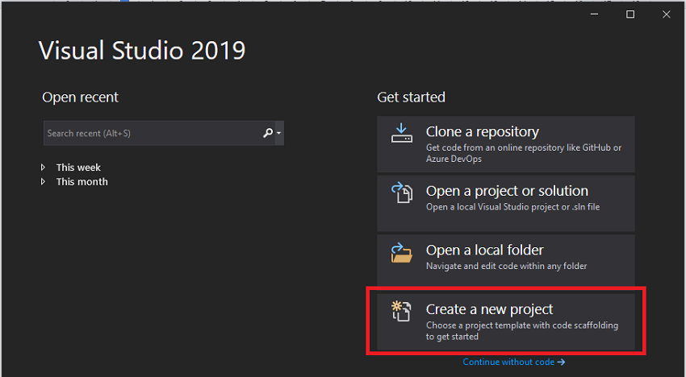
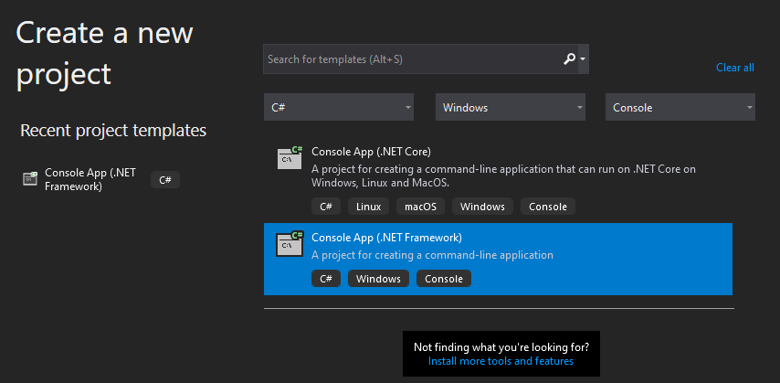
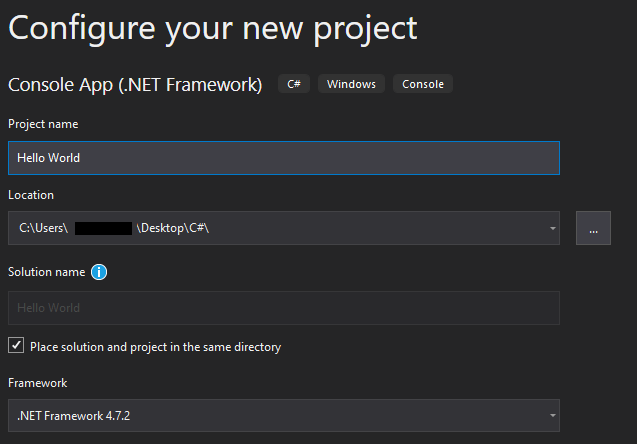
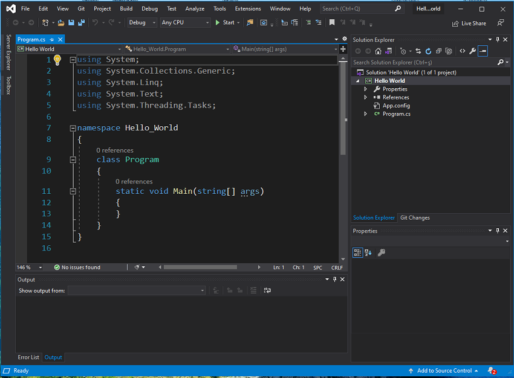

We downloaded and installed the Visual Studio and now we are good to go ! Let’s write our first C# program. It’s obvious, it will be another Hello World program.
Our program will simply print the things we want on the console.
Some think Hello World programs are useless and waste of time but I respectfully disagree with those people. A simple Hello World program shows us whether our programming environment setup is correct or not.
Let’s get started.
1. Create a New Project
Go ahead and start Visual Studio. You’ll see a window similar to below.
Click on the Create a new project button.

Create New Project Dialog
Visual Studio has many project templates. You should choose one accordingly. For us, we need to choose Console App(.NET Framework).
If you take a look at the figure below, you’ll see that I’ve used the filters to find the project template. You can either use filters or search bar to find what you’re looking for.

Choose Project Type
We are going to run our console app on the Windows. If you’re on Mac or Linux, you need to choose Console App (.NET Core)
If you can’t find the tools and features you’re looking for, go ahead and start Visual Studio installer and download/install the tools and feauters. Then they will appear on this dialog.
Click on the Next button and new-project-wizard will take you to configuration page. You’ll give your project a name, choose its location and which .NET Framework version to use.
Make sure to give your project a good name so you can find it easily later.

Configure your project.
Click on the create button and let Visual Studio do its work.
2. A Brief Tour of Visual Studio
You should be seeing something similar below.
We have our source code (Program.cs).
We have solution explorer where we can see the outline of the files needed to run our program.
There are many other windows but they are not necessary to mention at this point. We’ll get to them when it’s necessary.

An overview of Visual Studio
3. Project, Assembly and Solution
Project, Assembly and Solution. These are the terms we would face frequently so it’s worth to mention:
Project: Combination of source code and all the other resources to make an executable program.
Assembly: What we get after project has been compiled. It could be an EXE file or DLL file.
Solution: Project or projects to accomplish the given task. A solution could contain more than one project therefore it has information about how these projects will talk to each other as well. The solutions we are going to build in this blog will only have one project though.
4. Let’s Write the Hello World Program
Modify the source code as shown below.
{% highlight c# %}
using System;
using System.Collections.Generic;
using System.Linq;
using System.Text;
using System.Threading.Tasks;
namespace Hello_World
{
class Program
{
static void Main(string[] args)
{
Console.WriteLine("Hello World");
}
}
}
{% endhighlight %}
And that’s it. We completed our first C# program. Easy, right ?
Now, let’s run it.
To run a program either click on the Start button on the toolbar or press F5.
There you go ! Did you see it ? Your program flashed for one second and disapperead.
Actually, your program worked as expected. It started, printed the text Hello world and closed. It happened so quick so you didn’t get the chance to see it.
Let’s modify the source code as shown below.
{% highlight c# %}
using System;
using System.Collections.Generic;
using System.Linq;
using System.Text;
using System.Threading.Tasks;
namespace Hello_World
{
class Program
{
static void Main(string[] args)
{
Console.WriteLine("Hello World");
Console.ReadLine();
}
}
}
{% endhighlight %}
Now, run it again. This time your program will not disappear because we tell it to wait and read the keyboard input. This is a small trick that keeps the console open.
That's it. We've written our first C# program. I know it's nothing and it does nothing but it's a start.